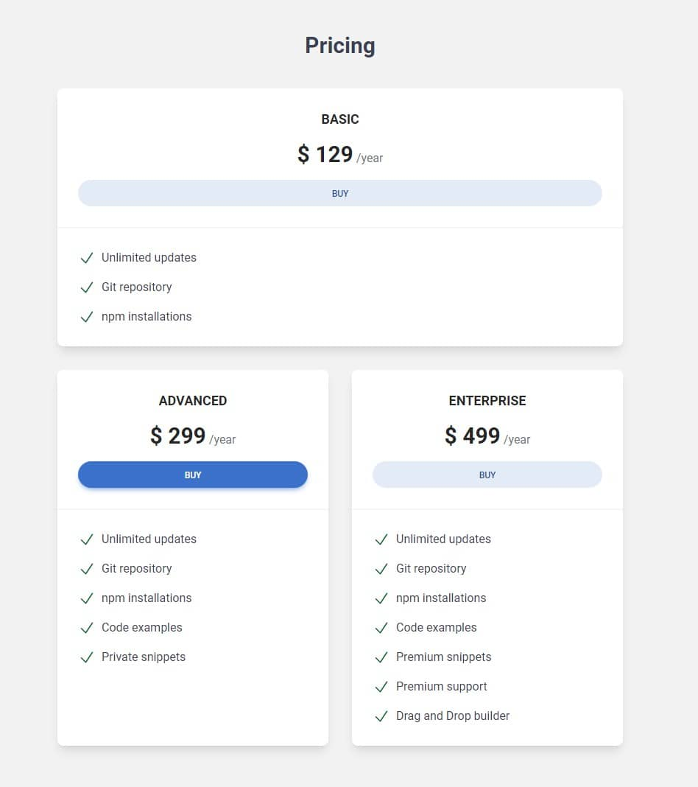
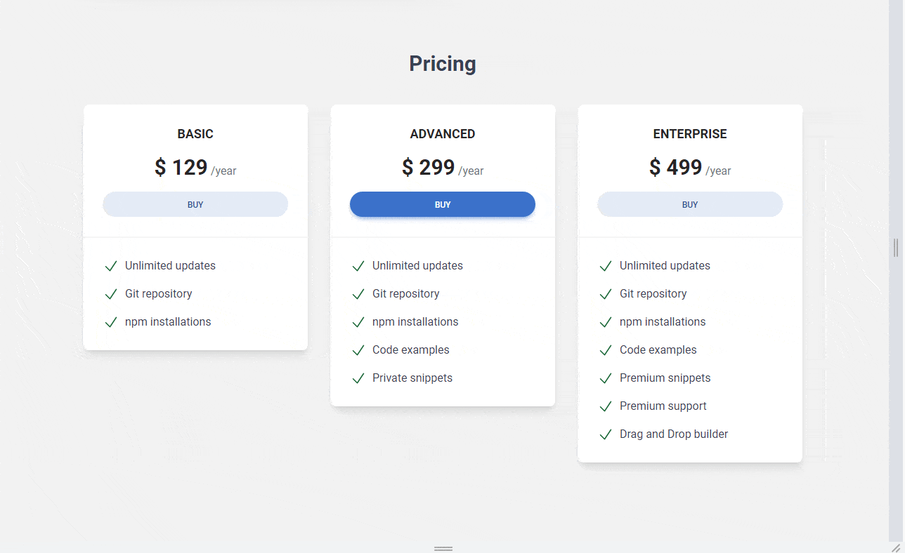

In the previous lesson, we managed to create an advanced Grid with a good-looking tablet view.
However, some problem remained.
The natural reaction of human perception is that what is in the middle is the most important. Therefore, in the desktop view, when we have 3 cards next to each other, the middle one is the best highlighted (we strengthen this impression by adding a stronger color to the button).
Such a composition tells the user - "This is the recommended option and we want you to pay the most attention to it!"

However, look at what's happening in the tablet view - the first card occupies the top position and additionally extends to full width. The second card (i.e. the one we want to stand out the most) together with the third are pushed below. Now the first card looks like the most important one, and we don't want that.
What we want is that on large screens the most important tab ("Advanced") should be in the middle and on tablet view it should be at the top.
We can achieve this by reordering the columns at specific breakpoints.
Tailwind CSS provides utility classes for controlling the order of grid
items. These are the order-{n} classes, where
{n} represents the order number. An important thing to note is
that the ordering starts from 1, not 0. So
order-1 means the item will appear first,
order-2 means it will appear second, and so on.
For instance, to make the second column appear first, and the first column appear second, you can do this:
Tailwind CSS allows you to apply different orders at different breakpoints.
This is achieved by prefixing the order class with the screen
size. For example, md:order-{n} applies the order only on
medium screens and above.
If you want the second column to appear first on medium screens only, you would write:
Here, on medium screens, the second column ('Column 2') will appear first, the first column ('Column 1') will appear second, and the third column ('Column 3') will appear third. On smaller screens, the columns will appear in the order they are written in the HTML.
Note that the order classes only apply to flex and grid containers. If two items have the same order, they will appear in the order they are written in the HTML. So, the order of the HTML elements matters if you're using the same order class for multiple elements.
Now let's use this knowledge and change the order of the columns in our project.
The HTML of our grid is becoming more and more complex, and the number of classes can be dizzying. Unfortunately, it's an inseparable part of Tailwind.
However, we can make your life a bit easier. It is true that CSS Grid does not need any special elements or dedicated classes for columns (our pricing cards serve as both cards and columns at the same time), but at some stage of complication it is good to separate grid columns and components.
That's why we wrap each card in an outer div that will serve as
columns and add classes responsible for .col-span and
.order to it.
We will put the cards themselves into the divs that create the
columns.
So let's update grid in the pricing section so it looks as follow:
Now we need to reorder the columns so that the second column (with the "Advanced" card) stays in the same place on large screens, but changes to the first position on medium screens.
To achieve this we need to add .md:order-2 .lg:order-1 classes
to the first column and .md:order-1 .lg:order-2 classed to the
second column.
To the third column we don't need to add any classes, because it will be the
last one in the order by default. But for the sake of clarity, we will add
.md:order-3 .lg:order-3 classes to it.
And now it works perfectly - the "Advanced" card is in the middle on large screens, but on medium screens it jumps to the first position.
